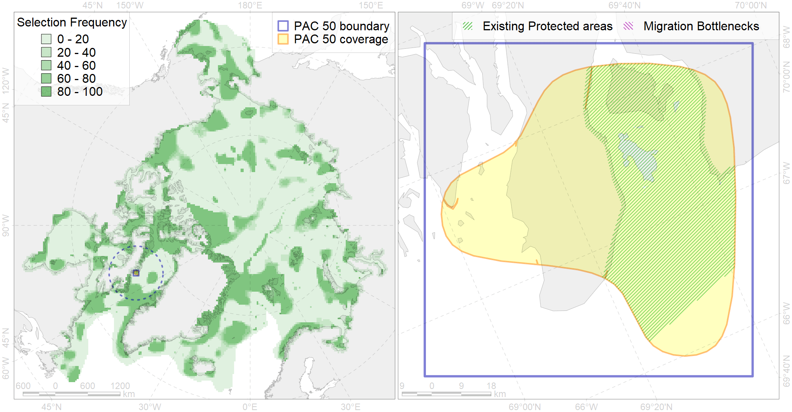

Region 50
Region 50
“ArcNet” scenario 33 achievement for region 50.
Use Accenter for advanced mode.

0
CFs inside of Region completely
0
CFs inside of Region at quarter
0
Complete-targets achievement by Region
0
Half-targets achievement by Region
| CF | Name | Target Achievement for Region | Proportion of Target Achievement in Region | Amount Proportion in Region |
|---|---|---|---|---|
| 5074 | Narwhal Eeast Baffin Island stock summer distribution | 14.0% | 13.3% | 7.9% |
| 7019 | Baffinian region | 17.1% | 12.4% | 5.7% |
| 9021 | polar bear denning areas of BB (Baffin Bay) subpopulation | 2.5% | 2.5% | 1.8% |
| 7142 | III.2.1.1. Baffinian shelf | 20.1% | 2.8% | 1.4% |
| 1011 | Atlantic Walrus haulouts in Nunavut and West Greenland | 1.1% | 1.1% | 1.2% |
| 5039 | Bowhead whale autumn concentrations in the Baffin Bay | 2.1% | 2.1% | 1.1% |
| 9002 | polar bear of the BB (Baffin Bay) subpopulation distribution | 3.0% | 2.4% | 1.0% |
| 2007 | Bearded seal whelping areas in the Baffin Bay | 3.0% | 1.0% | 0.8% |
| 7143 | III.2.1.2. Baffinian glacial troughs | 3.4% | 1.3% | 0.8% |
| 5041 | Bowhead whale summer concentrations in the Baffin Bay | 1.1% | 1.0% | 0.6% |
| 3034 | Marginal Ice Zone distribution in July in the Baffin Bay LME | 1.9% | 0.8% | 0.5% |
| 5065 | Killer whale summer feeding areas in the North West Atlantic | 7.9% | 0.8% | 0.5% |
| 8036 | Salt marshes of the Baffin Bay LME | 1.4% | 0.9% | 0.4% |
| 2021 | Harp seal foraging areas in the Baffin Bay region | 1.5% | 0.7% | 0.4% |
| 6015 | Black guillemot (Cepphus grylle mandti) breeding grounds | 2.6% | 0.6% | 0.4% |
| 2044 | Ringed seal whelping areas in the Baffin Bay region | 1.3% | 0.6% | 0.3% |
| 1002 | Atlantic Walrus Summer Distribution in Canada | 0.9% | 0.6% | 0.3% |
| 3123 | polynya Greenland W | 2.3% | 0.4% | 0.3% |
| 4048 | Feeding/nursery area of the ogac (Gadus ogac ) (F 41) | 2.0% | 0.5% | 0.3% |
| 6029 | Glaucous gull (Larus hyperboreus euceretes) breeding grounds | 1.9% | 0.4% | 0.3% |
| 2027 | Hooded seal foraging areas | 0.6% | 0.5% | 0.2% |
| 4056 | Distribution of the American Plaice (Hippoglossoides platessoides) (F 47), European populations | 6.3% | 0.4% | 0.2% |
| 4074 | Fish zoogeography, Arctic Region, High-Arctic Shelf Province, Canadian-Greenland District (10A) | 2.2% | 0.3% | 0.2% |
| 2019 | Harbour seal range in the North Atlantic region | 2.6% | 0.4% | 0.2% |
| 4029 | Feeding area of the Arctic charr (Salvelinus alpinus), anadromous populations (F28) | 0.3% | 0.3% | 0.1% |
| 4055 | Range of the Shorthorn Sculpin (Myoxocephalus scorpius) (F 46), American populations | 3.8% | 0.2% | 0.1% |
| 4053 | Range of the Fourhorn Sculpin (Myoxocephalus quadricornis) (F 45), Euro-Asian populations | 3.8% | 0.2% | 0.1% |
| 4046 | Range of the Thorny Skate (Amblyraja radiata) (F 3) | 1.1% | 0.2% | 0.1% |
| 4059 | Range of the Greenland Halibut (Reinhardtius hippoglossoides) (F 49) | 2.3% | 0.2% | 0.1% |
| 6083 | Thick-billed murre (Uria lomvia lomvia) wintering grounds | 0.3% | 0.2% | 0.1% |
| 4003 | Range of the Atlantic Capelin (Mallotus villosus) (F10) | 2.0% | 0.2% | 0.1% |
| 4017 | Feeding/ migration area of the Greenland Shark (Somniosus microcephalus) (F1) | 0.3% | 0.1% | 0.1% |
| 4032 | Range of the Arctic skate (Amblyraja hyperborea) (F2) | 1.5% | 0.1% | 0.0% |
| 4037 | Distribution of the Glacial cod (Arctogadus glacialis) (F34) | 0.4% | 0.1% | 0.0% |
| 2061 | Ringed seal circumpolar foraging areas as predicted by MIZ distribution | 0.1% | 0.0% | 0.0% |
| 5115 | Narwhal wintering areas | 0.1% | 0.1% | 0.0% |
| 5112 | Arctic Cetaceans (beluga, bowhead, narwhal) winter habitats as predicterd by MIZ | 0.1% | 0.0% | 0.0% |
| 4041 | Range of the Polar Cod (Boreogadus saida) (F35) | 0.2% | 0.1% | 0.0% |